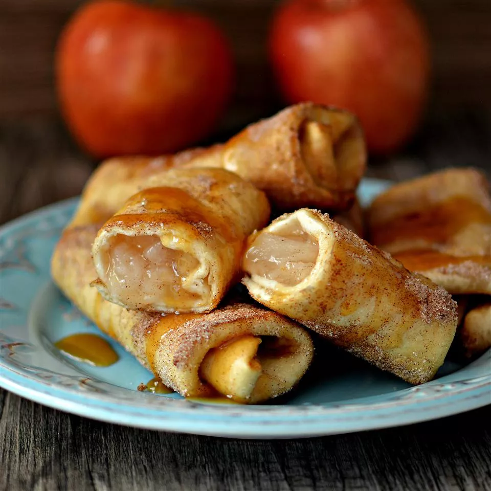

Apple Cinnamon Chimichangas

Filled with apples and cinnamon, these chimichangas can be served as an after-dinner treat or midday snack, if you like, drizzle with honey.
Best Mexican-inspired breakfast or dessert!.
Ingredients
- 1 (21 ounce) can apple pie filling.
- ½ cup cinnamon sugar.
- 15 (6 inch) flour tortillas.
- oil for frying.
Steps
- Heat apple pie filling in a small pot over medium-low heat until warmed through, about 5 minutes.
- Place cinnamon sugar in a shallow dish.
- Spoon 1 1/2 tablespoons of filling onto each tortilla. Fold in opposing edges and roll up as you would a burrito.
- Heat oil in a large, deep saucepan over medium heat.
- Place a batch of rolled tortillas seam-side down in the hot oil and fry until browned and crispy, 1 to 2 minutes. Turn and continue frying until all sides are browned, 1 to 2 minutes more. Roll in cinnamon sugar to coat. Repeat with remaining batches.